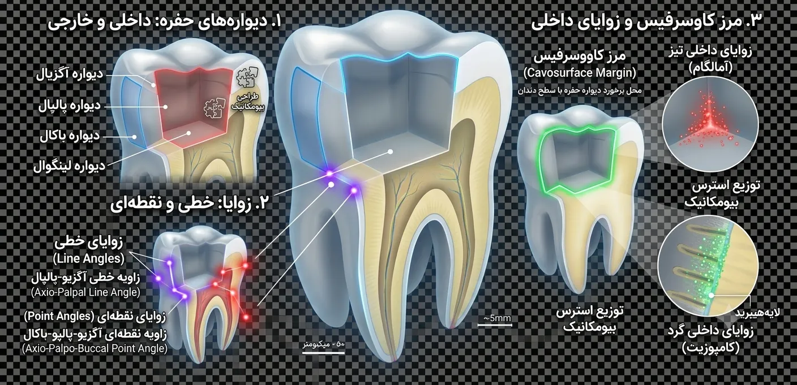

نسخه استخراجشده؛ ترجمه یا تأیید علمی انجام نشده است. وضعیت: captured
(توضیح تصویر: این دیاگرام یک مقطع عرضی از دندان مولر را با یک حفره آمادهشده نشان میدهد. دیوارههای خارجی با رنگ آبی و دیوارههای داخلی با رنگ قرمز مشخص شدهاند تا تمایز آنها کاملاً واضح باشد.)
دیوارههای حفره آمادهشده به دو دستهی اصلی تقسیم میشوند (با رفرنس به تصویر بالا):
دیوارههای خارجی (External Walls): دیوارههایی هستند که در سمتِ سطوحِ خارجیِ دندان قرار دارند و نامِ همان سطح را میگیرند.
مثال: دیوارهیِ باکال (Buccal)، دیوارهیِ لینگوال (Lingual)، دیوارهیِ دیستال (Distal) و دیوارهیِ مزیال (Mesial). (با رنگ آبی در تصویر).
دیوارههای داخلی (Internal Walls): دیوارههایی هستند که درونِ بافتِ دندان قرار دارند و با سطوحِ خارجی دندان تماسی ندارند.
دیوارهیِ آگزیال (Axial Wall): دیوارهای داخلی که موازی با محور طولی دندان (Pulp) است. (با رنگ قرمز در تصویر).
دیوارهیِ پالپال (Palpal Wall) / کف حفره: دیوارهای داخلی که عمود بر محور طولی دندان و رو به پالپ است (در حفرات اکلوزال). این دیواره معمولاً به عنوان کف حفره (Floor) شناخته میشود. (با رنگ قرمز در تصویر).

(توضیح تصویر: این دیاگرام شفاف، محل برخورد سطوح را در یک حفرهیِ مهندسیشده نشان میدهد. زوایای خطی با خطوطِ بنفشِ درخشان و زوایای نقطهای با نقاطِ قرمزِ درخشان مشخص شدهاند تا درکِ سهبعدی آنها آسان شود.)
برخورد دیوارههای حفره با یکدیگر، زوایا را به وجود میآورد که در مهندسی تراش و گیر ترمیم بسیار مهم هستند (با رفرنس به تصویر بالا):
زاویهیِ خطی (Line Angle): از برخوردِ دو دیواره یا سطح به وجود میآید و نامِ هر دو سطح را میگیرد (محلِ یک خط). (با رنگ بنفش در تصویر).
مثال: زاویهیِ خطیِ آگزیو-پالپال (Axio-palpal Line Angle) که از برخورد دیوارهیِ آگزیال و دیوارهیِ پالپال به وجود میآید.
زاویهیِ نقطهای (Point Angle): از برخوردِ سه دیواره یا سطح به وجود میآید و نامِ هر سه سطح را میگیرد (محلِ یک نقطه). (با رنگ قرمز در تصویر).
مثال: زاویهیِ نقطهایِ آگزیو-پالپو-باکال (Axio-palpo-buccal Point Angle).
(توضیح تصویر: این دیاگرام، مقایسهی دو مفهومِ مهم را نشان میدهد. سمت چپ، مرزِ بیرونیِ حفره (Cavosurface) را با یک خط سبز درخشان نشان میدهد و سمت راست، زوایایِ داخلیِ تیز (مخصوص آمالگام) و گرد (مخصوص کامپوزیت) را مقایسه میکند.)
تسلط بر مرزها و زوایای داخلی، کلیدِ سیلِ مارژینال و مقاومتِ دندان است (با رفرنس به تصویر بالا):
🔑 مرز کاووسرفیس (Cavosurface Margin):
این مرز، محلِ برخوردِ دیوارهیِ حفرهیِ آمادهشده با سطحِ خارجیِ دندان است. این یک خطِ پیرامونیِ کامل است. (با خط سبز در تصویر).
زاویهیِ کاووسرفیس: زاویهای است که در این مرز، بین دیوارهی حفره و سطح تراشنخوردهی دندان تشکیل میشود.
📐 زوایای داخلی و توزیع استرس (با رفرنس به تصویر):
حفرات آمالگام: نیازمندِ زوایای داخلیِ تیز (Sharp) و مشخص در کف حفره برای تامین گیر مکانیکی هستند. (سمت راست تصویر).
حفرات کامپوزیت: نیازمندِ زوایای داخلیِ گرد (Rounded) هستند تا استرسها به خوبی توزیع شوند و رزین به راحتی نفوذ کند. زوایای تیز باعث تمرکز استرس و شکستگی میشود. (سمت راست تصویر).